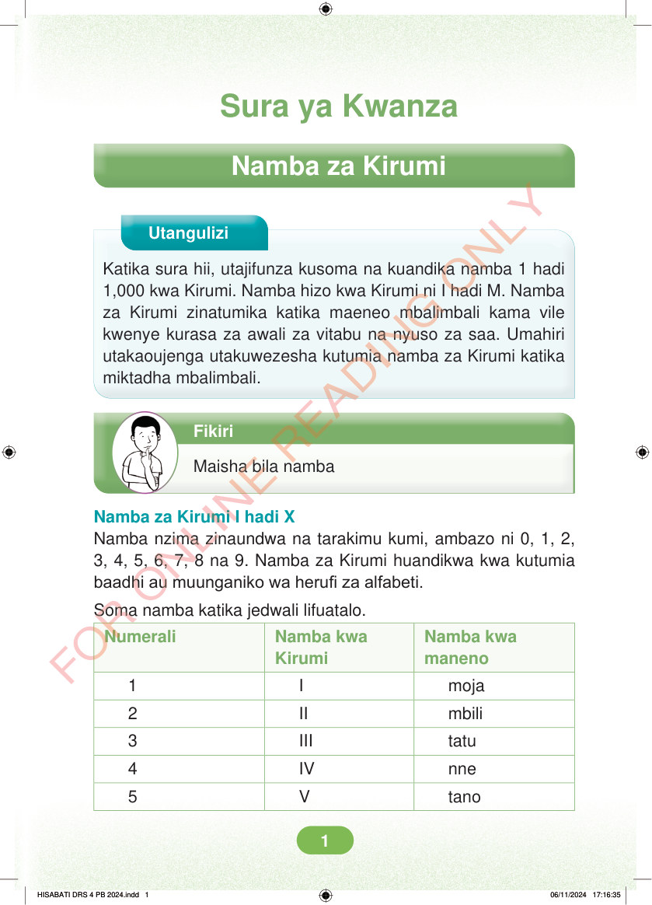

Sura ya Kwanza: Namba za Kirumi. Utangulizi. Katika sura hii, utajifunza kusoma na kuandika namba 1 hadi 1,000 kwa Kirumi. Namba hizo kwa Kirumi ni I hadi M. Namba za Kirumi zinatumika katika maeneo mbalimbali kama vile kwenye kurasa za awali za vitabu na nyuso za saa. Umahiri utakaoujenga utakuwezesha kutumia namba za Kirumi katika miktadha mbalimbali. Fikiri: Maisha bila namba. Namba za Kirumi I hadi X. Namba nzima zinaundwa na tarakimu kumi, ambazo ni 0, 1, 2, 3, 4, 5, 6, 7, 8 na 9. Namba za Kirumi huandikwa kwa kutumia baadhi au muunganiko wa herufi za alfabeti. Soma namba katika jedwali lifuatalo. Namba kwa numerali ni moja. Namba kwa Kirumi ni I. Namba kwa maneno ni moja. Namba kwa numerali ni mbili. Namba kwa Kirumi ni II. Namba kwa maneno ni mbili. Namba kwa numerali ni tatu. Namba kwa Kirumi ni III. Namba kwa maneno ni tatu. Namba kwa numerali ni nne. Namba kwa Kirumi ni IV. Namba kwa maneno ni nne. Namba kwa numerali ni tano. Namba kwa Kirumi ni V. Namba kwa maneno ni tano.